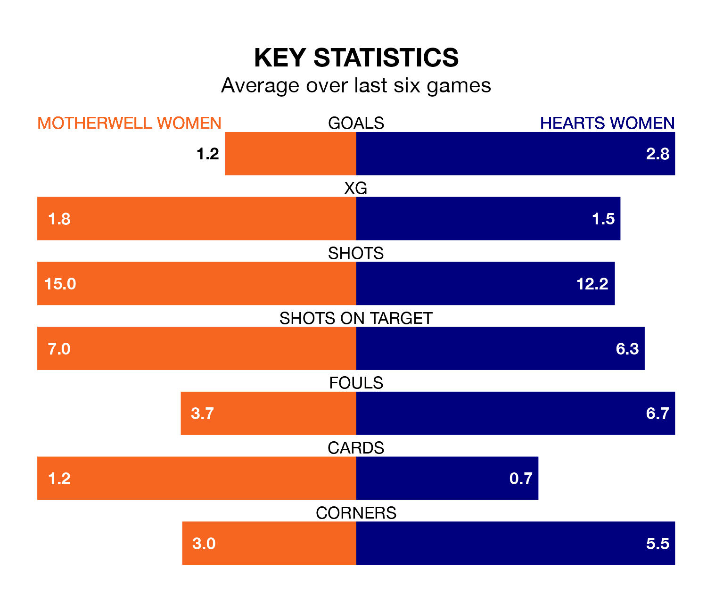

Motherwell Women are on a poor run ahead of hosting Hearts Women at K Park Training Academy on Sunday, with just four points collected from their last six games.
Motherwell have picked up one win and one draw in their last six SWPL 1 games, and face a Hearts side whose last six games have brought three wins and two draws.
With 25 goals in 16 games so far this season, Motherwell are scoring at below the league average rate with 1.6 goals per game. And they are conceding more than average, letting in 40 goals at a rate of 2.5 per game.
Hearts, meanwhile, are above average scorers, with 2.6 goals per game, compared to a league average of 2.2. They have conceded 1.3 goals per game.
In Emily Mutch, the home side can rely on one of the league's safest pair of hands. She has kept four clean sheets in her 16 appearances this season in SWPL 1.
In the visitors' net, Lisa Maher-Rodgers has two clean sheets in three games.
Motherwell are eighth in the table after 16 games, of which they have won five and drawn one, earning 16 points.
Hearts are three places ahead of Motherwell in fifth, with eight wins and three draws putting them on 27 points.
Over the last two years, Motherwell and Hearts have played each other on five occasions. Motherwell won one of them, Hearts three, and they drew once.
On average, Motherwell scored 0.6 goals and Hearts 1.6 in those matches.
Their last meeting was on October 22, when Hearts won 5-1 at home.
Motherwell's last match was on December 17, a 1-0 win against Dundee United Women, with Joanne Addie getting the goal for Motherwell.
Hearts drew 1-1 with Celtic Women last time out, also on December 17, with Georgia Timms on the scoresheet.
Updated: 15:34, 08/01/24